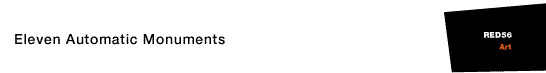
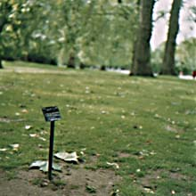
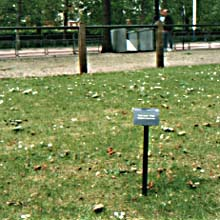
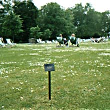
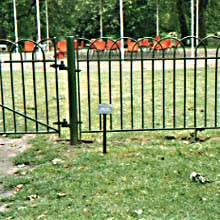

|  | St James' Park 1993 At various locations in St James' Park, botanic nameplates were installed (for two months), labelling a site where the usage or history of the park was evident. Each nameplate had the same structure: English name, foreign name (in each case the translation was a mistranslation which helped to uncover part of the repression for bilingual readers), site and date of the original event, and a catalogue number putting it into the series of automatic monuments. Each monument was designed to be a self-contained art work, although coming across several in a journey across the park would enrich ones understanding both of the park and the piece. In addition, there was a leaflet available in the cafeteria in the centre of the park which gave elliptical details of the geography and history of the park.
|     |